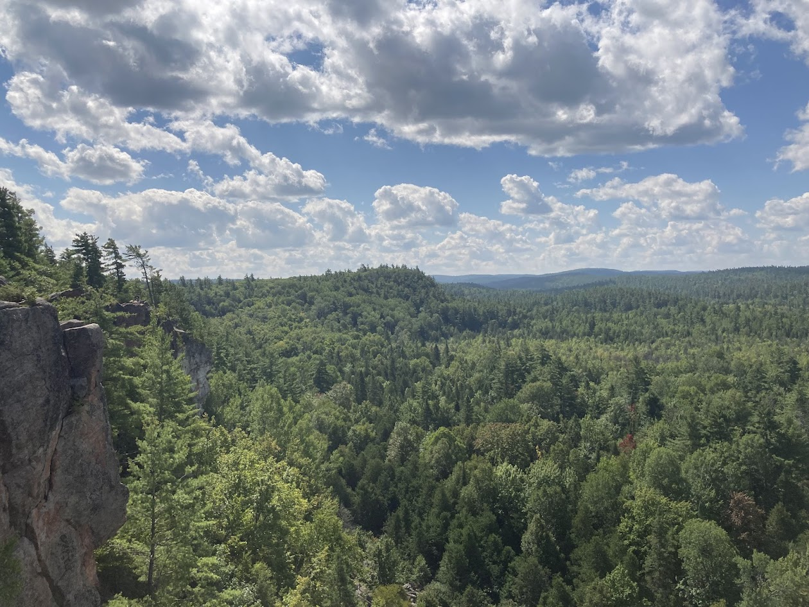
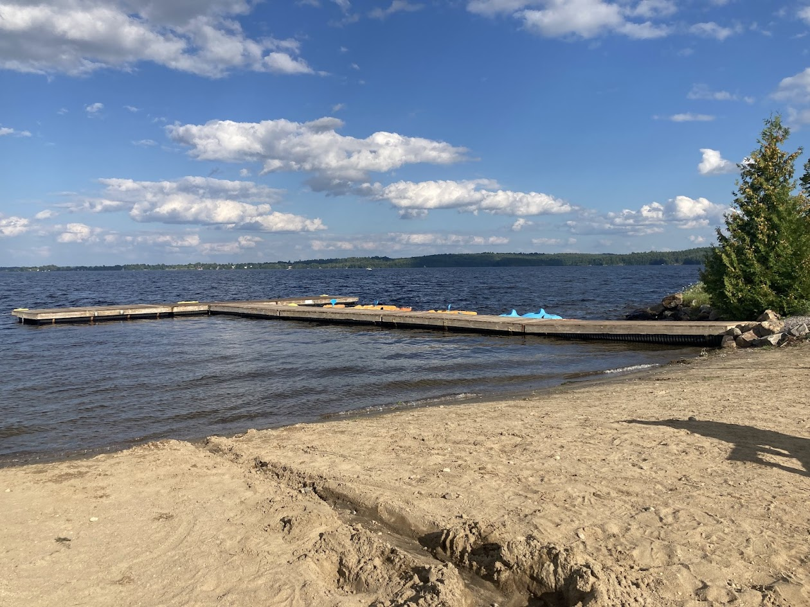

Truthfully I can not remember many details of this trip, but I will write as much as I remember as accurately as I can remember.
A couple of people in the outdoors club had offered a hike to Eagles Nest Lookout, a great hike relatively close by. They were looking to see if anyone else wanted to come. I decided to go for it. I met with the driver and two others on campus, and we drove to pick up another. From there we drove to the base of the trail.
Unfortunately, I had not really done any research on the trail before hand, and so I had no idea how long or steep the trail would be. I was under the assumption that this would be an easy day hike. A we started walking, I quickly realized that this was more than I had bargained for. The trail was very steep and never seemed to end. The real issue however was that my shoes were rubbing and very quickly giving me blisters, making it even harder to walk.
We stopped a couple of times along the way up to admire the view. I was quickly exhausted and my feet were in pain so I was grateful for a chance to sit and rest. When we got to the top we found ourselves at the top of a ski lift. Of course it was closed for the season, but there was a nice picnic bench to sit at and eat lunch.

A view from the top of the cliffs.
When we started our hike back down, I really started to struggle to keep up with the others. I think I was pretty dehydrated, and the blisters were pretty nasty at this point. They repeatedly had to stop and wait for me, which I felt really bad about, but I felt as though I would pass out.
When we finally got back to the car, we decided to stop at a beach on our way back since it was nice out. It was seemingly a private beach, part of a golf resort or something like that, but we figured no one would really care, so we went anyways. I was really hapy to take off my boots and soak my feet in the water. I would have loved to do some actual swimming, but i was also far too tired for that. We sat there and enjoyed ourselves for a little bit, until we got up and went back to the car. We were given a lift back to each of our houses, which was really nice of our driver.

The Beach we visited.